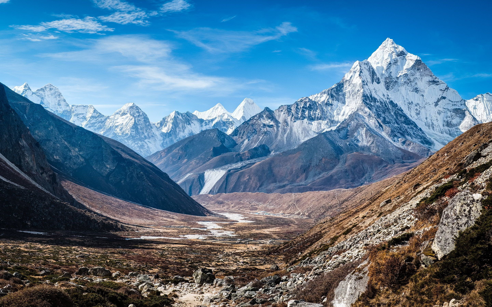
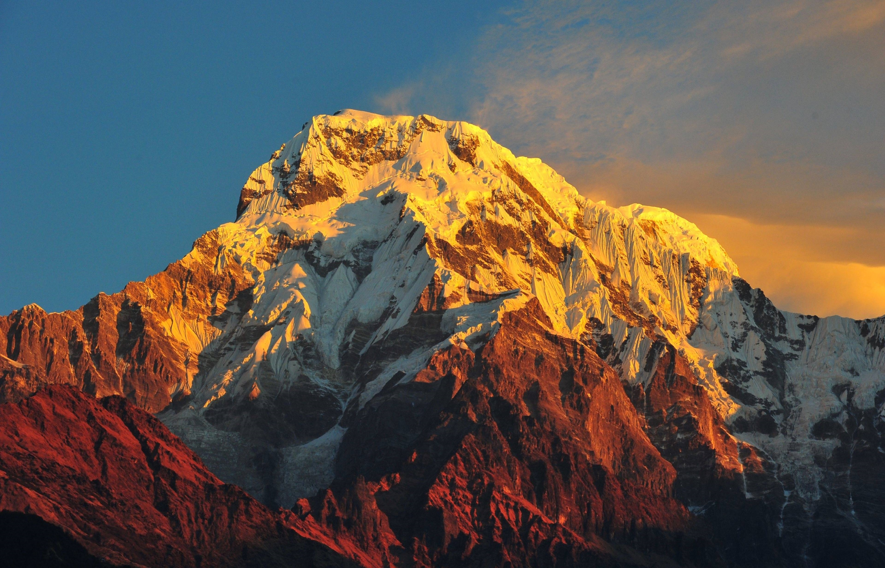

Gallery
- Home
- Gallery
- Godwin Austen (K2)



The summit was reached for the first time by the Italian climbers Lino Lacedelli and Achille Compagnoni, on the 1954 Italian expedition led by Ardito Desio. In January 2021, K2 became the final eight-thousander to be summited in the winter; the mountaineering feat was accomplished by a team of Nepalese climbers, led by Nirmal Purja and Mingma Gyalje Sherpa.
K2 is the only 8,000+ metre peak that has never been climbed from its eastern face.[14] Ascents have almost always been made in July and August, which are typically the warmest times of the year; K2's more northern location makes it more susceptible to inclement and colder weather.[15] The peak has now been climbed by almost all of its ridges. Although the summit of Everest is at a higher altitude, K2 is a more difficult and dangerous climb, due in part to its more inclement weather.[16] As of February 2021, only 377 people have completed the ascent to its summit.
The name K2 is derived from notation used by the Great Trigonometrical Survey of British India. Thomas Montgomerie made the first survey of the Karakoram from Mount Haramukh, some 210 km (130 mi) to the south, and sketched the two most prominent peaks, labelling them K1 and K2, where the K stands for Karakoram.
The policy of the Great Trigonometrical Survey was to use local names for mountains wherever possible[b] and K1 was found to be known locally as Masherbrum. K2, however, appeared not to have acquired a local name, possibly due to its remoteness. The mountain is not visible from Askole, the last village to the south, or from the nearest habitation to the north, and is only fleetingly glimpsed from the end of the Baltoro Glacier, beyond which few local people would have ventured.
Other local names have been suggested including Lamba Pahar ("Tall Mountain" in Urdu) and Dapsang, but are not widely used.
With the mountain lacking a local name, the name Mount Godwin-Austen was suggested, in honour of Henry Godwin-Austen, an early explorer of the area.